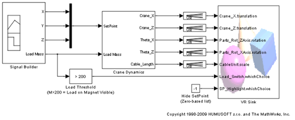
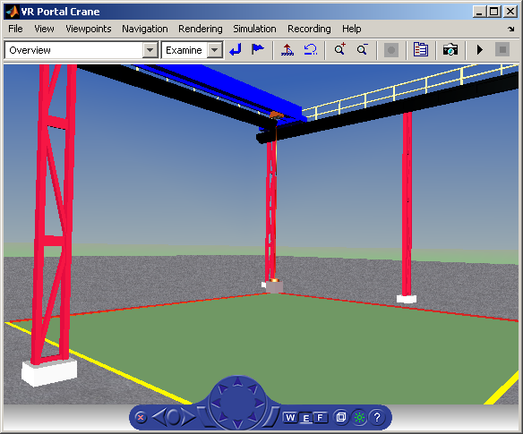

Portal Crane with Predefined Trajectory
The vrcrane_traj example is based on the vrcrane_joystick demonstration example, instead of interactive operator control it has a predefined load trajectory.
In addition to the vrcrane_joystick example, this model shows a technique to create visual impression of joining/splitting the moving objects in the VRML world. Crane magnet attaches the load box, moves it to a different location and then releases the box and returns to the initial position. This effect is achieved using an additional, geometrically identical shadow object that is placed as an independent object outside of the crane objects hierarchy. At any time, only one of the Load / Shadow object is displayed, using two VRML Switch nodes connected by the ROUTE statement. After the crane moves the load to a new position, at the time of the load release, a VRMLScript assigns the new shadow object position according to the current Load position. Shadow object becomes visible, and as it is independent from the rest of the crane moving parts hierarchy, it stays at its position as the crane moves away.
For details on how the crane model hierarchy and scripting logic is implemented please view the associated commented VRML file portal_crane.wrl in a text editor.
Acknowledgements:
The Portal crane VRML model is based on the work done by Mr. Martin Foltin and Mr. Samuel Bartos, Department of Automatic Control Systems, Slovak Technical University, Bratislava, Slovak Republic.
 